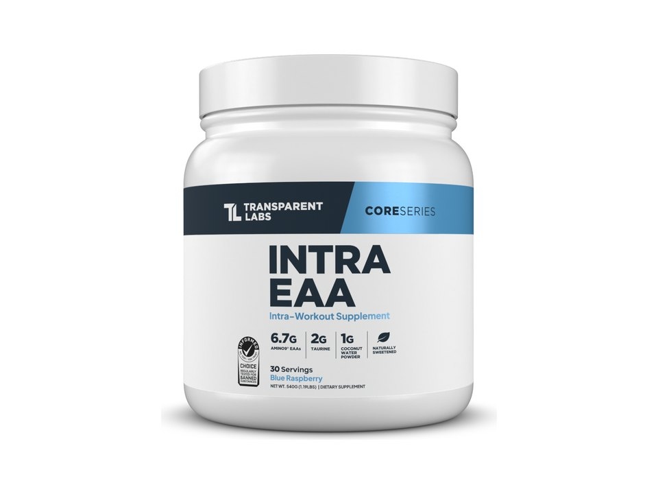

Product imagery supplied by the retailer. Packaging may vary — verify the Supplement Facts panel on the container you receive.
Transparent Labs
Intra
Our analysis — editorial take, not from the label
Stim-free intra-workout built on 6.7 g of the Amino9 EAA blend plus taurine and betaine, with Informed Choice certification listed on the brand page.
- EAAs
- 6.7 g
- BCAAs
- —
- Leucine
- —
- Servings
- 30
Price tier: Premium · relative cost per full serving across this database
We don't list dollar prices — they change daily and go stale. Check the live price instead:
View current price at Transparent Labs Compare all amino formulasScoop Sense doesn't collect user reviews and won't invent them. See the Transparent Labs listing
Affiliate links — Scoop Sense may earn a commission at no additional cost to you.
Fruit flavors sweetened with stevia only, with no artificial sweeteners or colors.
Label verified: July 2026 · View label source
Label data
Per full serving · 30 servings per container · from the manufacturer's panel
| Total EAAs | 6.7 g |
|---|---|
| Amino9 EAA blend | 6.7 g |
| Taurine | 2 g |
| BetaPure betaine anhydrous | 1.25 g |
| Coconut water powder | 1 g |
| Proprietary blend | Total only — source ratio undisclosed |
Primary label source: Transparent Labs product page · verified July 2026
Cautions
- Amino drinks supplement protein intake, not replace it
- Leucine, isoleucine, and valine amounts inside the Amino9 blend are not broken out individually
Formulated for healthy adults — not intended for anyone under 18. Full health & safety notes
Product details
Where this label sits
Transparent Labs Intra is one of the amino formulas in the Scoop Sense database. The label uses at least one proprietary blend, so a blend total stands in place of the individual amounts inside it. It runs 30 servings per container at the full labeled serving. Everything on this page comes from the manufacturer's supplement facts panel as of July 2026 — never from the marketing page.
Key ingredients & studied doses
- Amino9 EAA blend · 6.7 g. Supplies all nine essential amino acids the body cannot make, studied for supporting muscle protein balance around training.
- Taurine · 2 g. Amino acid studied for supporting hydration and endurance during longer sessions.
- BetaPure betaine anhydrous · 1.25 g. Studied for supporting cellular hydration and power output.
- Coconut water powder · 1 g. Natural potassium source that supports fluid balance alongside the 415 mg chelated electrolyte trio.
Flavors & sweetener
Fruit flavors sweetened with stevia only, with no artificial sweeteners or colors.
Who it's best for
People who want the full essential amino spectrum around training. Skip it if you want every individual dose disclosed on the label. Derived from the label figures above — not medical advice.
How we log this label
Every entry is built the same way: we read the current supplement facts panel, log each disclosed dose, compare it against the amounts used in published research, flag proprietary blends, and state the cautions plainly. The full methodology explains each step.
This label against the research
How we evaluate labelsEach bar shows the amount commonly used in published human research, and where this label's dose falls against it. Research amounts are context, not a recommendation — they are not doses, and nothing here is medical advice. The bars compare what the label states; we do not laboratory-test the product to confirm it.
-
Taurine2 g
At or above the studied amount0studied range 1 g–6 g7 g
Trials run from 1 g to 6 g a day, given as single doses or for up to two weeks, with mixed results across studies.
Source: Waldron et al., Sports Medicine 2018 — “The doses of taurine ranged from 1 to 6 g/day and were provided in single doses and for up to 2 weeks among a range of subjects.”
-
Betaine1.25 g
50% of the low end of the studied range0studied range 2.5 g3.5 g
Trials run from 1.25 g to 5 g a day; 2.5 g, usually split into two doses, is the amount most of them use.
Source: Lee et al., Journal of the International Society of Sports Nutrition 2010 — “Betaine supplement (B) was given as 1.25 grams (g) of betaine (Danisco Inc., Ardsley, NY) in 300 mL of Gatorade© sports drink, taken twice daily”
-
Total EAAs6.7 g
At or above the studied amount0studied range 1.5 g–15 g20 g
Stimulation of muscle protein synthesis has been reported from as little as 1.5 g of EAAs, with the maximal useful single dose put at 15–18 g — more in one sitting adds nothing. BCAAs alone supply only three of the nine essential amino acids.
Source: Ferrando et al., Journal of the International Society of Sports Nutrition 2023 — “Reasonable dosage of an EAA supplement does not exceed 15 g, meaning that even as much as three maximal doses per day is in line with normal daily consumption of EAAs…”
One or more amounts on this label sit inside a proprietary blend, so the individual doses behind the blend total cannot be compared at all.
What other people say
Why we don't rate productsTwo different things, side by side: the rating the seller publishes on its own store, and what independent users write in public threads. Scoop Sense writes neither and collects no reviews of its own. Neither is evidence that a product works — they describe what people experienced and expected, not what the research shows.
On the seller's page
This seller publishes no rating we could read.
What people actually report
Recent r/Supplements sentiment is less about Intra's ingredients than about Transparent Labs' pricing and its once-central promise of batch-level lab transparency, which some longtime buyers feel the brand has drifted away from.
- negative Product-line overlap. One user said Intra duplicates ingredients found in several of the brand's other supplements, making it feel redundant to buy alongside them.
- negative Value for price. Commenters argued the brand charges a large premium over cheaper alternatives that deliver similar formulas.
- negative Trust in testing claims. A separate thread accused the brand of no longer providing the batch-level lab results it built its transparency reputation on.
Read the threads yourself
-
“So if you get a supplement like Intra it has everything some others might have minus the glutamine.”
r/Supplements thread, 2025 -
“That's my point. Why are people giving companies like TL excessive margins. The whole industry needs a reset.”
r/Supplements comment, 2025 -
“I used to buy transparent labs based off their apparent commitment to, well, transparency.”
r/Supplements thread, 2025
Common questions about Transparent Labs Intra
Is Transparent Labs Intra an EAA or a BCAA product?
A full-spectrum EAA product: 6.7 g of essential amino acids per serving. Research on muscle protein synthesis centers on the full nine essential aminos rather than BCAAs alone.
What does the proprietary blend in Transparent Labs Intra hide?
The Amino9 EAA blend lists 6.7 g as a combined total. A blend total tells you the sum of its ingredients, not the individual doses inside it — which is why blend entries can't be checked against studied amounts.